Lesson 26 · Dynamic programming · 4 problems
Dynamic programming: 2D
Read first: Dynamic programming: 1D
Some DP problems need two numbers to describe a small problem: a row and a column on a grid, or a position in each of two words. Then the saved answers go in a table instead of a list.
The idea
Picture a city laid out in blocks, like a grid. You start at the top-left corner. You may only walk right or down. How many different routes reach the bottom-right corner?
Think about the last move. To stand on a corner, you came either from the corner above it or from the corner to its left. So:
ways(r, c) = ways(r-1, c)
+ ways(r, c-1)Here r is the row and c is the column, both counted from 0. On the top row you can only arrive from the left, and on the left column only from above: just 1 way each. Every other corner adds up the two corners that lead into it:

The grid is drawn tilted: corners at the same distance from the start sit on the same level. There are 6 routes to the far corner. Does the shape look familiar? It is Pascal's triangle, and you'll build it in the first problem below.
The same 3 questions
The recipe from DP 1D still works. Only question 1 changes: the answer now has two numbers in it.
- What does
dp[r][c]mean? "The number of routes from the start to row r, column c". - How does it come from smaller answers?
dp[r][c] = dp[r-1][c] + dp[r][c-1]: from above plus from the left. - What are the first values? The whole top row and the whole left column are 1.
Fill the table row by row, left to right. Then when you reach a cell, the cell above and the cell to the left are already done.
In Python
A table is a list of rows, and each row is a list. Build it like this:
# 2 rows, 3 columns, all 0
dp = [[0] * 3 for _ in range(2)]
dp[0][0] = 9
# [[9, 0, 0], [0, 0, 0]]The trap. This shorter line looks the same, but it is wrong:
bad = [[0] * 3] * 2
bad[0][0] = 9
# [[9, 0, 0], [9, 0, 0]]* 2 does not copy the row. It puts the same row list in the table twice, so changing one row changes "both". The for _ in range(...) version makes a new row each time. Always use it.
Here is the grid template:
def grid_paths(rows, cols):
dp = [[0] * cols
for _ in range(rows)]
for r in range(rows):
for c in range(cols):
if r == 0 or c == 0:
# top row, left column
dp[r][c] = 1
else:
up = dp[r - 1][c]
left = dp[r][c - 1]
dp[r][c] = up + left
# bottom-right corner
return dp[rows - 1][cols - 1]Cost. Each cell is filled once with one addition. A grid of rows × cols cells takes O(rows × cols) time, and the table takes the same space.
Two words: the second kind of table
A subsequence of a word is what is left after you cross out some letters, keeping the rest in order. "ct" is a subsequence of "cat" (cross out "a"). The longest common subsequence (LCS) of two words is the longest one they share. For "cat" and "cut" it is "ct", length 2.
Question 1: dp[i][j] = the LCS length of the first i letters of word a and the first j letters of word b. Row 0 and column 0 mean "no letters", so they are 0.
Question 2: look at the last letter of each part, a[i-1] and b[j-1]:

In the table, "yes" means: the cell up-left, plus 1. "No" means: the bigger of the cell above and the cell to the left.
def lcs(a, b):
n, m = len(a), len(b)
dp = [[0] * (m + 1)
for _ in range(n + 1)]
for i in range(1, n + 1):
for j in range(1, m + 1):
if a[i - 1] == b[j - 1]:
# same: keep it
d = dp[i - 1][j - 1]
dp[i][j] = d + 1
else:
# drop a letter
up = dp[i - 1][j]
left = dp[i][j - 1]
dp[i][j] = max(up, left)
return dp[n][m]Cost. One cell per pair of prefixes: O(n × m) time and space.
Worked example
Grid paths, 3 × 3. Fill row by row. Each cell = above + left.
| c=0 | c=1 | c=2 | |
|---|---|---|---|
| r=0 | 1 | 1 | 1 |
| r=1 | 1 | 1+1 = 2 | 1+2 = 3 |
| r=2 | 1 | 2+1 = 3 | 3+3 = 6 |
The answer is in the bottom-right cell: 6 routes.
LCS of "cat" and "cut". Rows are letters of "cat", columns are letters of "cut". "-" means "no letters yet".
| - | c | u | t | |
|---|---|---|---|---|
| - | 0 | 0 | 0 | 0 |
| c | 0 | 1 | 1 | 1 |
| a | 0 | 1 | 1 | 1 |
| t | 0 | 1 | 1 | 2 |
- Row c, column c: same letter, so up-left (0) + 1 = 1.
- Row a, every column: "a" is not in "cut", so we copy the bigger of above and left: 1.
- Row t, column t: same letter, so up-left (1) + 1 = 2. The answer is the bottom-right cell: 2.
Your turn
For each problem, answer the 3 questions first. Draw a tiny table on paper if it helps.
Hint
prev[c-1] + prev[c], where prev is the row before.Solution
class Solution:
def generate(
self, numRows: int
) -> List[List[int]]:
rows = []
for r in range(numRows):
# start with all 1s
row = [1] * (r + 1)
for c in range(1, r):
prev = rows[r - 1]
# above-left + above
row[c] = (prev[c - 1]
+ prev[c])
rows.append(row)
return rows
# About n*n/2 numbers: O(n^2) time.Hint
Solution
class Solution:
def getRow(
self, rowIndex: int
) -> List[int]:
row = [1]
for _ in range(rowIndex):
new = [1]
# sum each neighbour pair
for c in range(1, len(row)):
new.append(row[c - 1]
+ row[c])
new.append(1)
row = new
return row
# O(k^2) time, O(k) space
# (k = rowIndex).Hint
dp[i][j] = True if the first i letters of s fit inside the first j letters of t. Row 0 is all True (no letters always fit). For a cell: you can always skip t's letter (look left). If the two last letters are the same, you can also match them (look up-left). (The two-pointer way is shorter too: try both.)Solution
class Solution:
def isSubsequence(
self, s: str, t: str
) -> bool:
n, m = len(s), len(t)
dp = [[False] * (m + 1)
for _ in range(n + 1)]
# empty s fits in anything
for j in range(m + 1):
dp[0][j] = True
for i in range(1, n + 1):
for j in range(1, m + 1):
# skip t's letter
ok = dp[i][j - 1]
# or match the letters
same = s[i-1] == t[j-1]
d = dp[i-1][j-1]
if same and d:
ok = True
dp[i][j] = ok
return dp[n][m]
# O(n*m) time and space.Hint
Solution
class Solution:
def uniquePaths(
self, m: int, n: int
) -> int:
# top row and left column: 1
dp = [[1] * n
for _ in range(m)]
for r in range(1, m):
for c in range(1, n):
up = dp[r - 1][c]
left = dp[r][c - 1]
dp[r][c] = up + left
return dp[m - 1][n - 1]
# O(m*n) time and space.When these feel quick, two more classic grid and two-word tables are waiting on LeetCode: 64 Minimum Path Sum and 1143 Longest Common Subsequence. Both are Medium. You already have the templates for them.
Interesting fact: How diff and git diff compare two files
When you run git diff, Git shows which lines were removed and which were added. To do that it must find what the old and new files have in common: that's a longest common subsequence, with whole lines as the "letters".
The plain LCS table would need one cell for every pair of lines. Two files of 10,000 lines would need 100 million cells. So GNU diff and Git use a smarter method by Eugene Myers, from his 1986 paper "An O(ND) Difference Algorithm and Its Variations". The paper shows that the LCS and the shortest list of edits are two sides of the same problem. Myers' method is fast when the two files differ only a little, which is the usual case.
The Git manual lists myers as the default diff algorithm, and the GNU diff manual names Myers' paper as its basic algorithm.
Answers
- 118. Pascal's Triangle
class Solution: def generate( self, numRows: int ) -> List[List[int]]: rows = [] for r in range(numRows): # start with all 1s row = [1] * (r + 1) for c in range(1, r): prev = rows[r - 1] # above-left + above row[c] = (prev[c - 1] + prev[c]) rows.append(row) return rows # About n*n/2 numbers: O(n^2) time. - 119. Pascal's Triangle II
class Solution: def getRow( self, rowIndex: int ) -> List[int]: row = [1] for _ in range(rowIndex): new = [1] # sum each neighbour pair for c in range(1, len(row)): new.append(row[c - 1] + row[c]) new.append(1) row = new return row # O(k^2) time, O(k) space # (k = rowIndex). - 392. Is Subsequence
class Solution: def isSubsequence( self, s: str, t: str ) -> bool: n, m = len(s), len(t) dp = [[False] * (m + 1) for _ in range(n + 1)] # empty s fits in anything for j in range(m + 1): dp[0][j] = True for i in range(1, n + 1): for j in range(1, m + 1): # skip t's letter ok = dp[i][j - 1] # or match the letters same = s[i-1] == t[j-1] d = dp[i-1][j-1] if same and d: ok = True dp[i][j] = ok return dp[n][m] # O(n*m) time and space. - 62. Unique Paths
class Solution: def uniquePaths( self, m: int, n: int ) -> int: # top row and left column: 1 dp = [[1] * n for _ in range(m)] for r in range(1, m): for c in range(1, n): up = dp[r - 1][c] left = dp[r][c - 1] dp[r][c] = up + left return dp[m - 1][n - 1] # O(m*n) time and space.